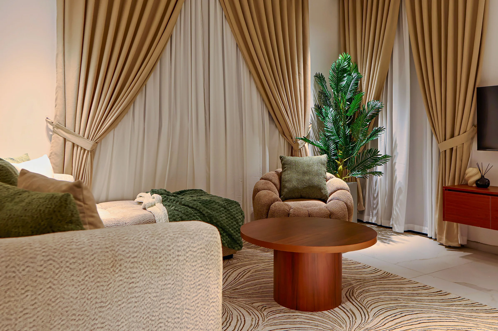
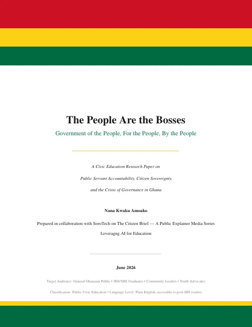
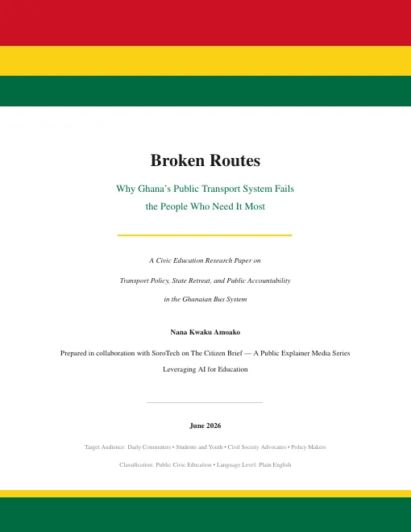
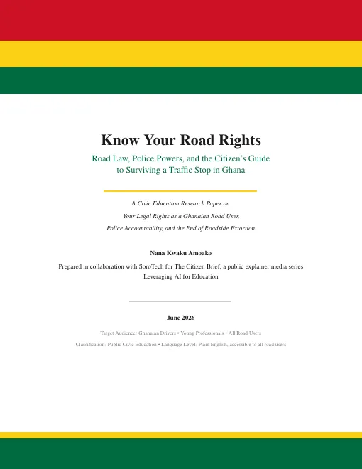

Essays & letters
Reading, thinking, exploring.
Civic essays on how Ghana works (and doesn't), research papers, and a short update every month.
Monthly update
Finally honing my talent
October was the month I stopped thinking about the camera and started carrying it. A short memo of what happened.

4 October 2026Monthly letter
A Little Corner
Letters from the first month of building in public
Civic education research paper · 63 pages
The People Are the Bosses
Government of the people, for the people, by the people

1 August 2026Civic education research paper · 44 pages
Broken Routes
Why Ghana's public transport system fails the people who need it most

15 July 2026Civic education research paper · 15 pages
Know Your Road Rights
Road law, police powers and the citizen's guide to a traffic stop in Ghana

Reading
- The Beautyful Ones Are Not Yet Born · Ayi Kwei Armah
- The Purpose Driven Life · Rick Warren
- Homegoing · Yaa Gyasi
Monthly updates by email
What I'm learning, what I'm doing and what I'm thinking, once a month.